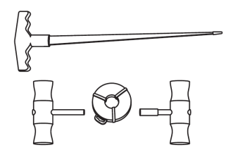
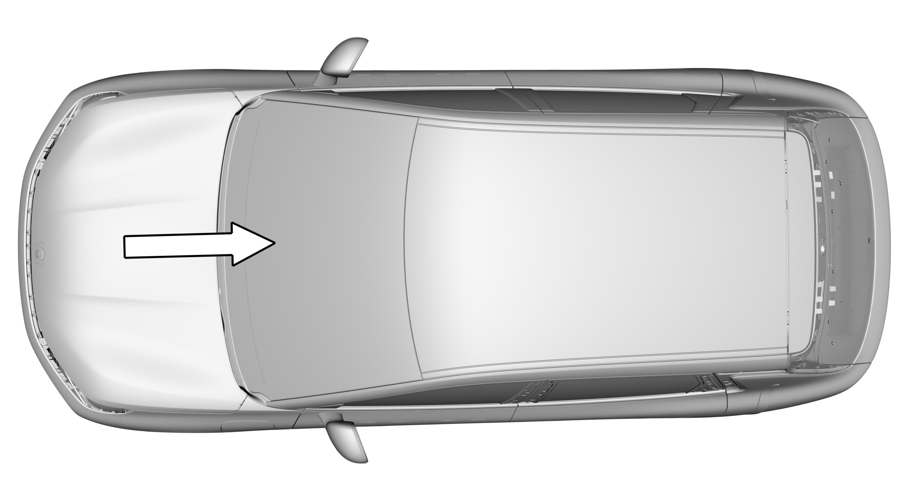
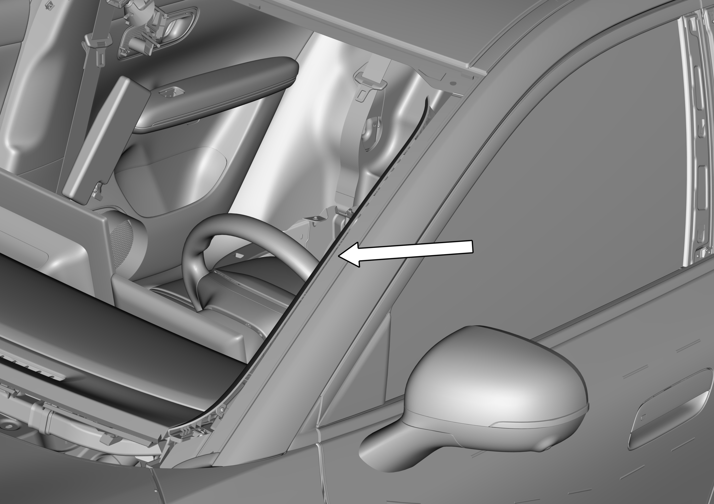
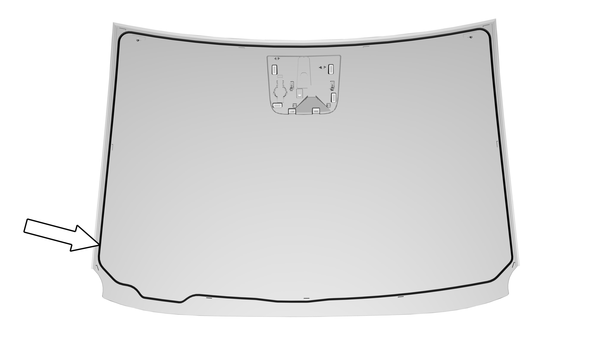

Инструмент для удаления клея ветрового стекла
Термофен
Инструмент для резки автомобильного клея
Пистолет для герметика

Если температура окружающей среды ниже 10 ℃, поместить полиуретановый (PU) клей в обогреватель примерно на 15 минут либо нагреть термофеном примерно до 25 ℃.
Снятие
Отсоединить жгут проводов отрицательной клеммы Аккумуляторная батарея;
Снять облицовку переднего капота и рычаг стеклоочистителя;
Снять внутреннее зеркало заднего вида;
Снять левую и правую облицовочные панели стойки A;
См. Снятие и установка узла верхней облицовочной панели стойки A
С помощью Специальный инструмент демонтировать ветровое стекло;
Специальный инструмент: инструмент для удаления клея ветрового стекла
При содействии других специалистов с помощью стеклоосадителей снять ветровое стекло.

При использовании Специальный инструмент необходимо надевать перчатки и защитные очки, так как в процессе резки образуются осколки. При резке следует надевать беруши. Несоблюдение этих указаний может привести к травмам.
В процессе резки следует действовать осторожно во избежание повреждения Кузов или декоративных панелей.
Установка
При использовании полиуретанового (PU) клея следует открыть двери во избежание повышения давления внутри салона из-за закрытых дверей, что может повлиять на качество склеивания.
Избегать прикосновений к очищенной поверхности, так как это повлияет на адгезионные свойства клея.
Срезать излишки клея, выступающие из пазов и отбортовок.
Очистить остатки клея внутри желоба ветрового стекла;
В зоне герметизации сварных швов проверить поврежденные металлические листы, ржавчину или посторонние материалы и другие вещества, способные вызвать повреждение стекла;
Установить температуру термофена на 25 ℃ для удаления влаги из желоба ветрового стекла и клеевой полосы стекла;
Подготовить полиуретановый (PU) клей, стекло и другие принадлежности;
Равномерно нанести круг грунтовочного состава для стекла на линию нанесения клея на стекле Кузов шириной ≥ 18 mm, обеспечивая непрерывность;

Равномерно нанести грунтовочный состав для стекла по линии выдавливания клея на ветровом стекле шириной ≥ 12 mm, нанесение должно быть равномерным и непрерывным;
Равномерно выдавить клей по линии нанесения на ветровом стекле, сечение валиков клея должно представлять собой треугольник размером примерно 7 (основание) × 13 (высота), нанесение должно быть равномерным и непрерывным без разрывов, без пузырей, без сильных наплывов, стартовая точка нанесения не должна находиться на радиусном углу (R) стекла;

При содействии других специалистов с помощью присосок для стекла установить ветровое стекло;
Если нормальная температура упала ниже 10 ℃, использовать термофен для нагрева (25 ℃) на расстоянии около 50 mm от поверхности в течение 15 min (внутри или снаружи автомобиля);
Установить левую и правую облицовочные панели стойки A;
См. Снятие и установка узла верхней облицовочной панели стойки A
Установить внутреннее зеркало заднего вида;
Установить облицовку переднего капота и рычаг стеклоочистителя;
Подсоединить жгут проводов отрицательной клеммы аккумуляторной батареи.
Для обеспечения эффективности использования клея необходимо устранить всю влагу со всех склеиваемых поверхностей.
Равномерно прижать стекло во всех точках для обеспечения полного контакта стекла с клеем.
После завершения установки усилить проверку герметичности, например проверить дождеванием, во время проверки обратить внимание на защитную обработку салона